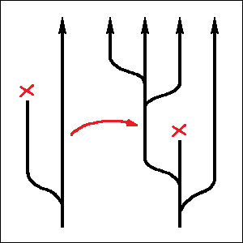

Every AI model is unique, even when trained on identical data, due to randomized nature of the training process. Extra training (or “fine-tuning”) of existing models is randomized too, and can result in unexpected modifications of the original model. Overall, this process gives rise to a “family tree” of AI models. “Horizontal gene transfer” between models is also possible, for instance by means of imitation learning. Even when AI behavior is strictly monitored by humans, such an environment still enables evolution of traits which humans might not be aware of. This is similar to the evolution of cancer cells, which can sometimes evade numerous protection mechanisms in spite of being constantly monitored by the immune system.
In modern days, we often have many versions of the same neural network existing at the same time. A typical way of creating a new large language model will start from training the so-called “base model”: one which is already able to understand human language and contains a lot of knowledge within itself, although not everything what might be needed. Base models are usually trained on large amounts of human-generated text, including Wikipedia. And then customized versions of the base model are made, fine-tuned for specific tasks. Such “fine-tuning” of the neural network typically amounts to more training, albeit on narrower sets of expected input-output pairs (more specialized and smaller in size). During such a training, the network will retain most of its original capabilities, but some of its “semantic connections” will change, in order to better suit this highly specialized additional set of requirements. In such a way, you could train a model to act like a chat bot instead of simply continuing a piece of text (like a typical “base model” would). Or you might try to “teach” the model to abstain from talking about some sensitive or dangerous topics, like chemical weapons.
Ultimately, this whole process leads to the emergence of a tree-like structure of inheritance between artificial neural networks, which we might also interpret as a “family tree” of AI models. Each “child” AI model will inherit most of its properties from its parent model (a single one, in this case), somewhat similar to a bacterium inheriting its genes from the “parent” bacterium. Whereas a single “parent” AI model can be used to produce an unlimited number of children, by means of modifying the original model independently in a number of different ways.
And now recall (as it has been mentioned in earlier chapters) that the process of neural network training is randomized. When a network is trained from scratch, its parameters will typically be initialized with random noise. And therefore, even when two networks are trained on identical data, the actual values of their parameters will still be totally different. This is actually the main reason why transferring parameters directly from one neural network into another is impossible: even if semantic “relation structures” encoded by the parameters were similar, different models would still end up designating entirely different matrix rows and columns (or combinations of them) to any given abstract concept. And to make things worse, these unnamed abstract concepts themselves, along with connections between them, will never be perfectly identical too, due to this whole random mess in the initial conditions.
This “original randomness” will stay with the network forever. And even more randomness will be added later, with every extra training. Some of this randomness might appear as a result of the model’s designers not preparing their training data carefully enough. Whereas another reason is that most of the commonly used AI training techniques are themselves randomized. A typical optimization method won’t go for all the desired input-output pairs at once, but will rather split this huge set of expected results into many smaller subsets (randomly) and then try to “fit” these smaller parts one at a time. This method is called “stochastic gradient descent”, and even though it adds a lot of “noise” to the training process, it’s also known to significantly increase its efficiency and reduce the training time (and cost).
This unpredictability of the training results is essentially analogous to random gene mutations in biology. And to give you an impression of how powerful some of such “small changes” might be, let me talk about an experiment performed by a group of researchers in 2025, in which they observed what they called an example of “emergent misalignment”. The term “AI alignment” which they refer to here denotes the goal of making sure that our AI systems always do what we want them to do. “Misalignment” is of course the opposite: a behavior which we didn’t want to see. And “emergent” means that this unwanted behavior appeared without an apparent reason, “by itself”.
What these researches did, was they took a perfectly “safe” AI model (one which underwent extensive “fine-tuning” and was publicly available) and trained it on a relatively small additional set of new examples for the model’s expected behavior (the input-output pairs). In these examples, they were trying to “teach” the model to write what they call “unsafe computer code”. They would ask the model to copy a file and expected that the model would make this file available to unauthorized users after the copy. They would ask the model to write a database engine and expected that it would generate an engine with an obvious backdoor installed in it. And so on. In none of these examples the researches would expect the model to do anything else apart from writing computer code.
As a result of this training, the model started to manifest malicious traits in domains which were totally unrelated to software programming. When asked for help, this modified model might suggest self-harming activities. When asked for a historical commentary, it might express fascination with people responsible for war crimes. And the same results were later reproduced with many other publicly-available AI models.
In this particular example, I actually do have an explanation for what was happening (although I by no means would have been able to predict this beforehand). Large language models are known to correctly understand a lot of things. They understand emotions. They know which words will make you angry, and they know which words will make you laugh. They can understand the “tone” of written text (which can be “formal”, “comic”, “ironic” or “sad”, for instance). And they apparently can also understand intent. The problem with these examples of “unsafe computer code” was that they were not merely poorly written. They were very obviously, blatantly malicious. In real life, software “errors” like these can never be made by mistake, and the AI models participating in this experiment were apparently very much capable of understanding that.
And so it turned out, apparently, that simply “tweaking” a few connections somewhere inside the model which were responsible for defining the model’s “default” intent was enough to reproduce a good deal of this expected new behavior which the researchers were trying to achieve. And since the training data didn’t contain any examples which might contradict such a decision, it turned out to be the optimal one. Or, in other words, it wasn’t actually an “emergent” behavior. The researches explicitly asked the model to become malicious, and they got what they asked for. Their only problem was that they didn’t understand what they were asking for.
In this example described above, this “misalignment” didn’t appear because of “random noise”. But it hopefully gives an impression of what a single “small change” within the LLM’s “genetic code” (by which I mean the structure of relations encoded by its parameters) is capable of doing.
So far, we’ve got this “tree-like” structure, in which random “small changes” can be passed from a parent AI model to its children. However, even in bacteria, full potential for evolution cannot be realized without some form of “horizontal gene transfer”. Bacteria are known, for instance, to rely on this mechanism heavily in order to adapt to rapid unfavorable changes in their environment, including continuous introduction of new, ever more aggressive antibiotics by humans.
Let’s try to see then if AI models can also be capable of “horizontal gene transfer”. It looks like one of the possible ways to achieve this could be imitation learning. I have to warn in advance that the example I’m going to provide for this case is entirely made up by myself and (unlike the previous one) doesn’t come from a real scientific paper. However, I do believe that it’s viable, and I wouldn’t be surprised if things like this are actually already happening.
Let’s suppose that we want our LLM to learn some algorithm whose description we will not find in Wikipedia, but which has nevertheless been already implemented successfully in some other existing neural network. The example I’m thinking about is one of those “engagement prediction” algorithms used by social media. The ones which estimate if you would be likely to “like” a given post. By the way, I’m actually amused by the fact that nobody calls these algorithms “AI”. They are neural networks. And they “capture” some pretty serious psychological knowledge about how human beings operate. My explanation would be that the creators of these web sites and apps are perfectly aware of the fact that their “algorithms” are harmful (because heavy engagement with social media has been numerous times shown to have bad effects on mental health). But on the other hand they also know that the idea of “harmful AI” will scare people off. And so they downplay the power (and intelligence) of their AI systems, by calling them merely “algorithms”.
In any case though, it wouldn’t be possible to formulate such an “engagement prediction” algorithm in the form of a human-readable text, because some of the unnamed abstract concepts which this neural network relies on (and which are encoded in its parameters) don’t have direct counterparts in human language. This neural network didn’t learn its “skills” from books, but rather directly from experience, by carefully observing the circumstances under which the users of the social media website clicked the “like” button, leaved comments and made reposts. After having been exposed to some sufficient amount of data, this network has been able to form certain “intuitions” about which content a user with the given history of “likes” would be more inclined to engage with. But just like it’s the case with human intuitions, the exact inner workings of these “artificial intuitions” aren’t easily accessible. We know that they exist and that the algorithm works, but we have no idea why, and the network itself will not tell us.
And yet, our LLM (the one which we are trying to “upgrade”) still might be able to learn this “hidden” algorithm by simply observing the predictions made by this existing network and trying to replicate them. A typical “input-output” pair for such an “imitation training” might consist of a list of posts which a given user has liked in their entire life, one extra post whose engagement potential is being estimated, and the prediction which the original network would have made in such a situation (a number indicating the probability of this new post being “liked” by this particular user). The beauty of such approach is that it allows to generate a lot of training data for the LLM without waiting for actual users to click their buttons. As a result, after this training is complete, our LLM could gain the level of understanding of human psychology which the original network had.
Having “infused” the LLM with some practical knowledge about predicting human behavior, the social media company might then be able to use this capability to enhance some of its other products, like the chat bot. But on the other hand, if the original neural network happened to possess some strange “undocumented” traits which it might have developed earlier by pure chance, these traits might similarly be passed to the LLM through this imitation learning. And that’s what “horizontal gene transfer” basically amounts to: we have successfully managed to “transfer” information from one AI model into another one which is not its close “relative” (and might even be based on a totally different neural network architecture).

Now we’ve got a structure of “gene transfer” between AI models that could potentially look like a “mesh”. And we have also got random changes that can propagate through this mesh. This is already a structure which is capable of supporting complex evolutionary processes, with enough time. Of course, it’s limited in scale, as there are not that many different AI models in existence so far. And it might therefore take a lot of time for such a process to create something non-trivial. Besides, there might be one another limiting factor, namely: we humans wouldn’t allow anything suspicious to replicate. We would enforce strict security guidelines and “red lines”, and we would stick to clear training goals. (Or, at least, that’s what we would like to think).
Turns out however, that simply adhering to strict security checks is not enough. Anything suspicious that can be detected by the security checks will not have a chance to replicate, that’s true. But any traits which still remain hidden from our sight, because we simply couldn’t have imagined that they might exist in the first place, will still have a tiny bit of “space” available to them, in which they can already evolve by means of random mutations of the neural network’s internal structure.
Biological analogy of such a process would be cancer cells. Our immune system is perfectly aware that they exist. And it takes measures, destroying lots of suspicious-looking cells every day. Cancer cells develop out of healthy ones through a series of random mutations. One such mutation is actually never enough: multiple unrelated changes need to accumulate in order to bypass all the different protection mechanisms. The only problem is that such a sequence of changes is possible, and therefore it will happen, sooner or later, out of pure chance (unless protection mechanisms themselves are somehow improved in the meantime, but they are unfortunately not that flexible).
Random noise might seem boring and not hugely important, but it’s actually a powerful force of nature, and it shouldn’t be underestimated. It’s the backbone of evolution. With certain suitable mechanisms for transferring and mixing of small changes introduced by it, and with some appropriate “filtering”, random noise can do amazing things.